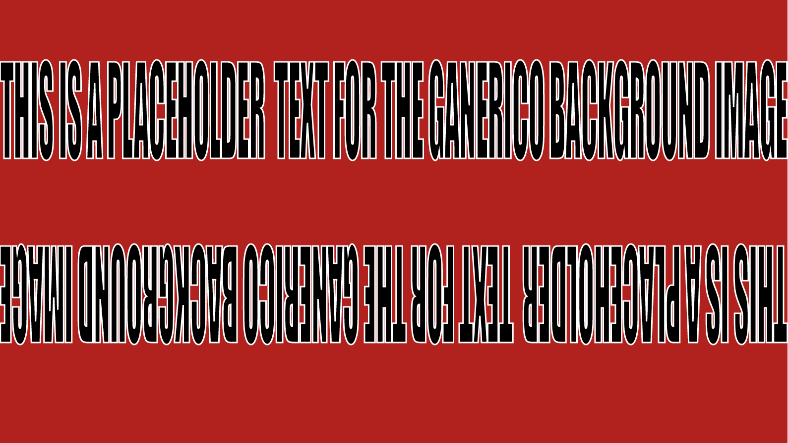

ABOUT
GaneriCo started out in 2018 as a simple idea- To create a brand that would make everything accessible to everyone. Nothing it sold could, of course, be of exceptional quality, but it would go against the then-fictional brand's principles to make products of a quality below that which could be expected. A common brand for the common man, woman, child, and any other demographic possible. This brand would have a name that would perfectly reflect this ideal: GeneriCo. A portmaneau of "Generic Company" that contained the word "Generic" in it. It made sense. But it didn't stick.
It is important to note that, in 2018, the founder of GaneriCo - Fernando "Fern" Mendizabal - was, in fact, still a high-schooler. And Generi Co. wasn't ever meant to be a real brand, but rather a placeholder brand for a school project in digital design. For the project, our founder and a then-friend were desinging an ad for a beanie. Our founder's friend (whose name will be changed to Peter in order to respect their privacy) had volunteered to photoshop the brand name into a picture of David Hasselhoff wearing a beanie, and Fernando thought it would be a great idea, so he sent Peter the brand name and waited for the picture. When Peter finally sent the picture, Fernando was surprised to find out the beanie hat read "GaneriCo" instead. After revising his original text, he realized it actually read "GaneriCo", not "GeneriCo". Some back and forth later, and the brand name was set.

Fast forward to today, and although the ambition of producing every manner of product available is still much too far away, the founding ideas that gave way to the name "GeneriCo" still show through. With a simple look through the sidebar items, one can clearly see the desire to put expensive or complicated commodities at the reach of the common man. Our current motto - "For People, by people" reflects that we are a brand committed to putting people at the top of our priorities. The second half of our motto also reflects our policy on Artificial Intelligence tools, and assures that GaneriCo does not follow the ever-so-prevalent notion that 'If it has AI, it's just better'. With this comes the guarantee that 100% of the art on this webpage is 100% human made*, and that any and all uses of Artificial Intelligence are both disclosed and done locally on our machines to ensure the least environmental impact from their use**.
* in this specific case, "human made" refers to any item, physical or digital, that has not been created, altered, or otherwise manipulated using any Artificial Intelligence tools.
** in the case of using a pre-trained artificial intelligence model, all the training was done regardless of GaneriCo, and no additional environmental damage was done by downloading the premade model. Any additional training and use is done locally on a personal or company machine, which generates no significant additional environmental impact.